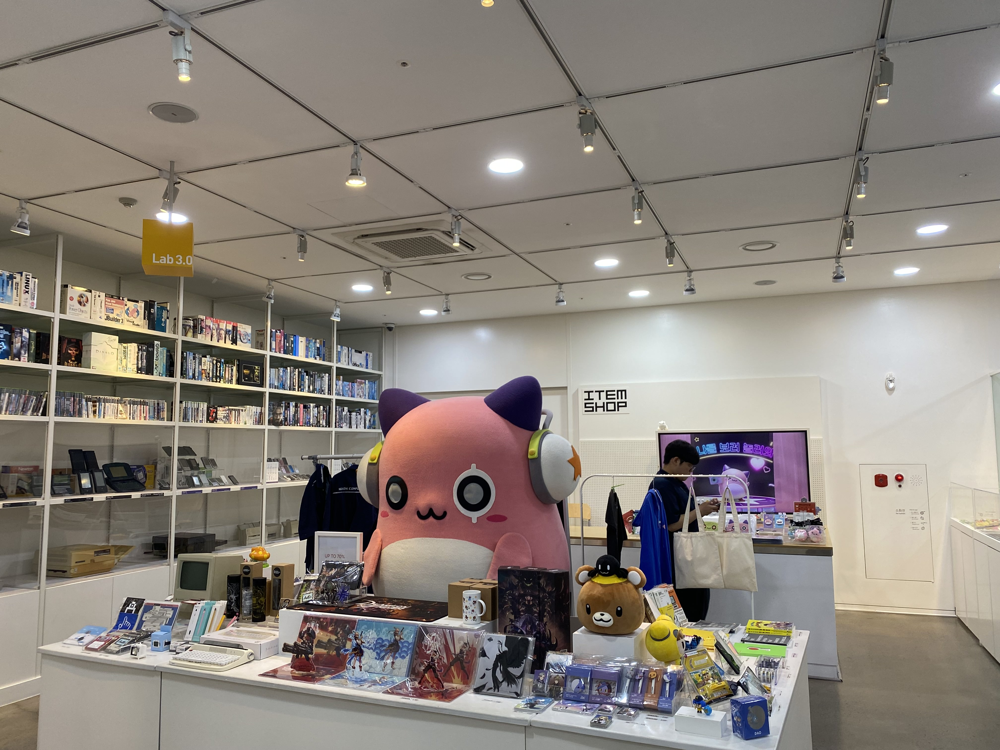
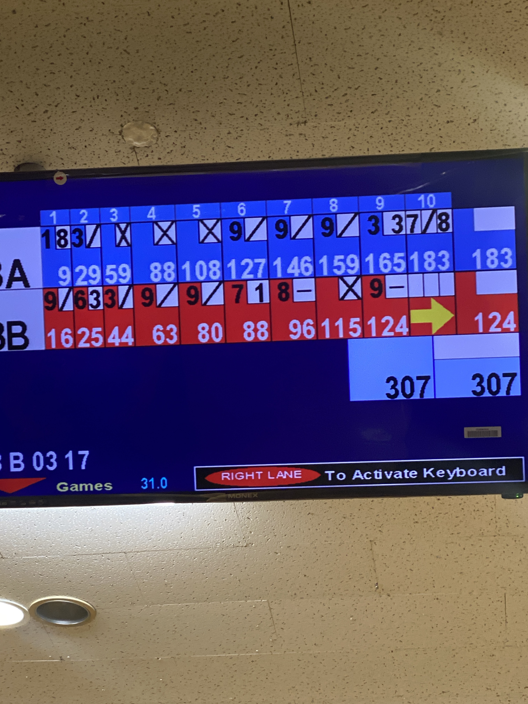
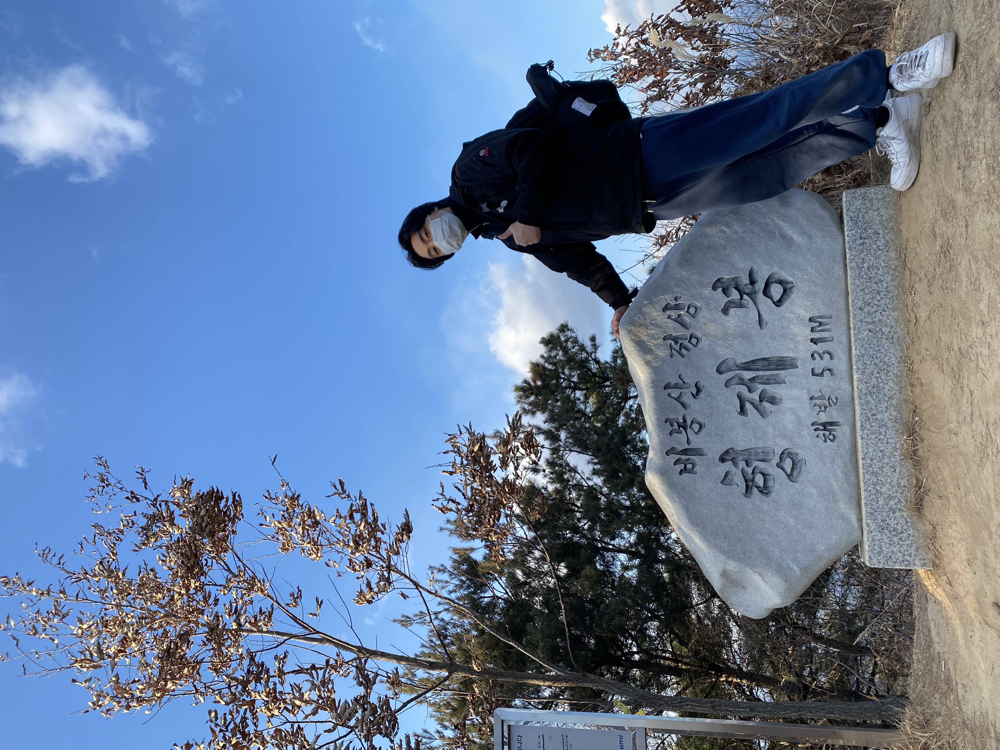
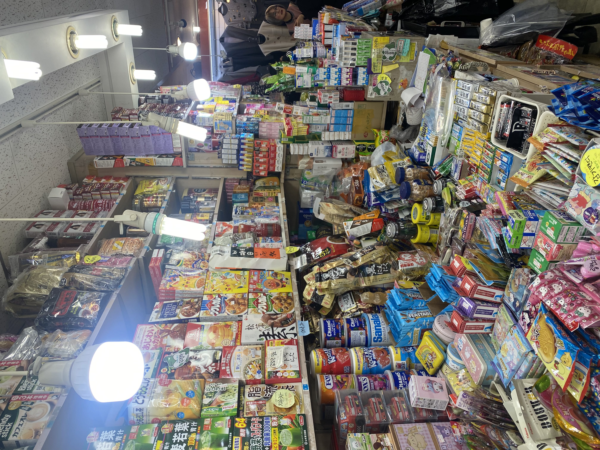
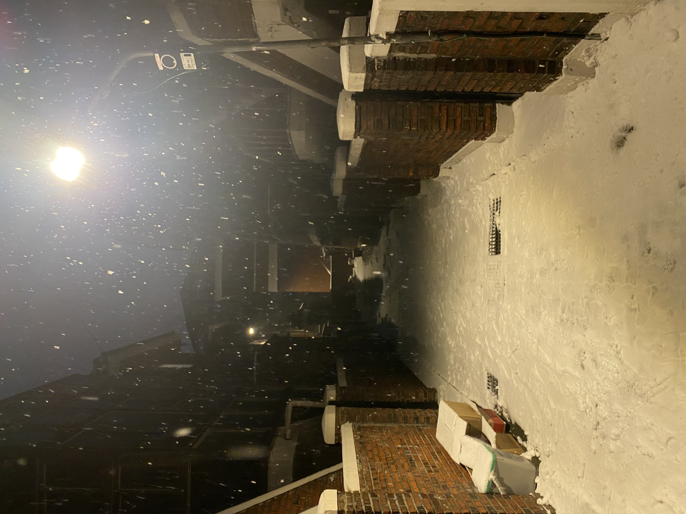
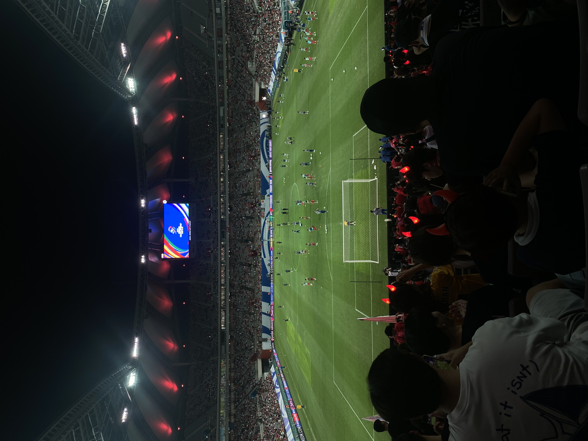
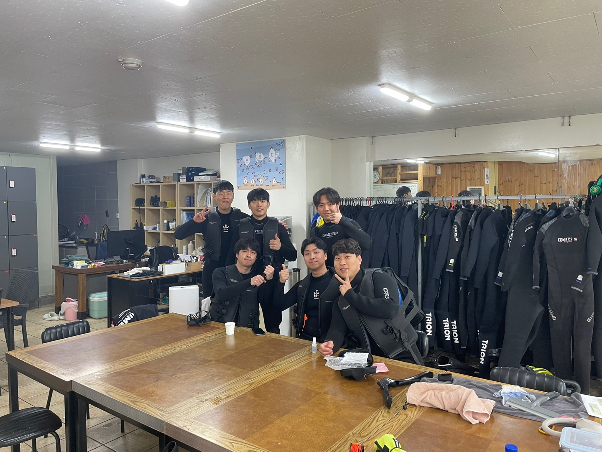

기억에 남는 여행지

제 사진들입니다.~~
안녕하세요 우테코 7기 부기입니다. 화이팅~~~ 😎
제 사진들입니다.~~

영화 남자가 사랑할 때는 거친 삶을 살아온 남자가 처음으로 진정한 사랑을 만나면서 변화하는 과정을 그린 감성 멜로 영화다. 황정민이 연기한 태일은 불량스러운 모습 뒤에 따뜻한 면모를 가진 캐릭터로, 한정 없이 거칠지만 한없이 순수한 사랑을 보여준다. 김희애가 연기한 주호정은 그런 태일의 변화에 중심이 되는 인물로, 담담하면서도 깊이 있는 감정을 전달한다. 이 영화의 가장 큰 매력은 황정민의 연기다. 거친 사채업자로 등장하지만, 사랑을 하면서 서툴고 순진한 모습이 묻어나면서 캐릭터에 대한 몰입도가 커진다. 특히 감정선이 극대화되는 후반부에서는 눈물 없이 보기 힘들 정도로 가슴을 울리는 장면이 많다. 강렬한 감정 연출과 현실적인 설정이 더해져 공감대를 형성하며, 관객들로 하여금 태일의 사랑과 아픔을 함께 느끼게 만든다. 영화의 분위기는 전반적으로 무겁지만, 태일의 서툰 행동과 순수한 모습에서 자연스럽게 웃음이 나오는 순간들도 있다. 덕분에 지나치게 감정이 가라앉지 않으며, 오히려 감동을 극대화하는 요소로 작용한다. 또한, 배경음악과 촬영 기법이 감성을 더욱 풍부하게 만들어 주어 감정선이 섬세하게 전달된다. 결국, 남자가 사랑할 때는 사랑이 한 사람을 어떻게 변화시키는지를 보여주는 영화다. 태일의 사랑은 거창하지도, 화려하지도 않지만, 진실한 마음이 담긴 사랑이었다. 그의 마지막 선택과 결말은 안타까우면서도 깊은 여운을 남긴다. 사랑의 감정을 진하게 느끼고 싶은 사람에게 추천할 만한 영화다.

최엘비의 독립음악은 단순한 힙합 앨범이 아니라, 독립적인 아티스트로서의 정체성과 음악적 철학을 깊이 있게 담아낸 작품이다. 제목부터 직관적이면서도 의미심장한데, 이는 주류 음악 산업에서 벗어나 자신만의 색깔을 고수하며 음악을 해온 최엘비의 태도를 그대로 드러낸다. 앨범을 감상하면, 최엘비 특유의 날카로운 가사와 감각적인 비트가 어우러지며 강한 인상을 남긴다. 상업적 트렌드에 휩쓸리기보다 본인의 경험과 가치관을 음악으로 풀어내면서, 리스너들에게 직접적인 메시지를 전달한다. 특히, 자전적인 서사가 담긴 곡들은 그의 고민과 다짐이 녹아 있어 더욱 진정성 있게 다가온다. 비트는 심플하면서도 감각적이며, 재즈, 붐뱁, 트랩 등 다양한 스타일을 유기적으로 활용해 지루하지 않게 전개된다. 이러한 요소들은 그의 플로우와 가사 전달력을 극대화하며, 듣는 이로 하여금 가사에 집중하게 만든다. 무엇보다 독립음악은 힙합 씬에서 독립적인 아티스트로 살아간다는 것이 얼마나 어려운 일인지, 그리고 그 안에서 자신만의 길을 개척하려는 의지를 분명히 보여준다. 최엘비는 자신의 음악이 단순히 ‘유명해지기 위한 수단’이 아니라, 자신을 표현하는 도구라는 것을 이 앨범을 통해 증명해 보였다. 결국, 이 앨범은 ‘독립’이라는 키워드가 지닌 무게를 온전히 담고 있으며, 기존의 틀을 벗어나 자유롭게 음악을 만들고 싶은 사람들에게 깊은 공감을 불러일으킬 만한 작품이다. 상업성과 독창성 사이에서 고민하는 아티스트들에게는 일종의 선언처럼 다가올 것이고, 힙합을 좋아하는 리스너들에게는 묵직한 메시지를 남길 것이다.

배틀그라운드(PUBG)는 배틀로얄 장르를 대표하는 게임으로, 현실적인 총기 메커니즘과 전략적인 플레이가 특징이다. 100명의 플레이어가 한 맵에 투입되어 최후의 1인이 되기 위해 생존 경쟁을 펼친다. 게임의 가장 큰 매력은 사실적인 총기 반동과 거리별 탄도 계산, 긴장감 넘치는 전투다. 그래픽과 사운드는 사실적이며, 특히 발소리와 총소리로 적의 위치를 파악하는 것이 중요하다. 다양한 맵과 환경이 제공되어 매번 새로운 전략을 구사해야 한다. 솔로 모드는 개인 실력을, 스쿼드는 팀워크와 전략적 움직임을 요구해 다양한 플레이 스타일을 경험할 수 있다. 다만, 초보자가 적응하기 어려운 난이도와 핵 문제, 일부 최적화 이슈는 단점으로 꼽힌다. 하지만 전략적 플레이와 생존 경쟁의 묘미를 즐기는 유저라면 PUBG는 충분히 매력적인 선택이 될 것이다.